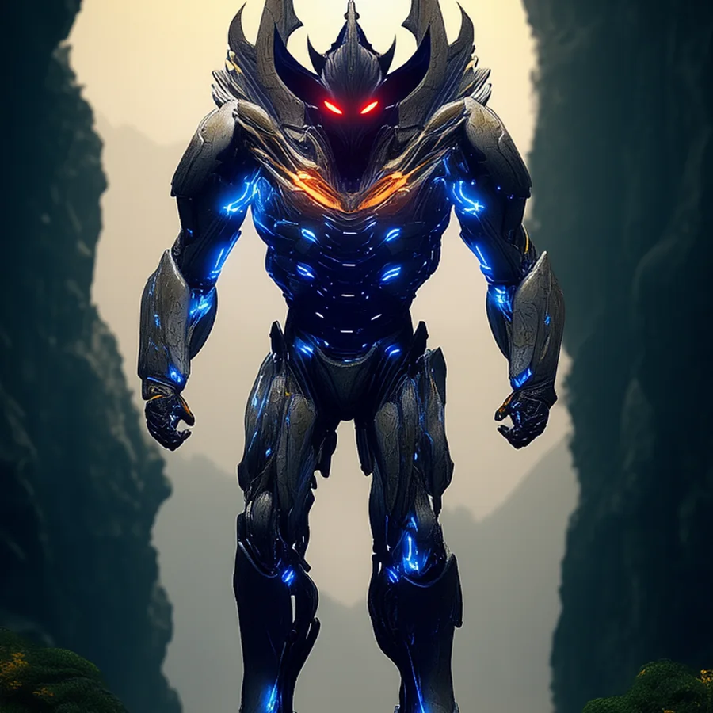
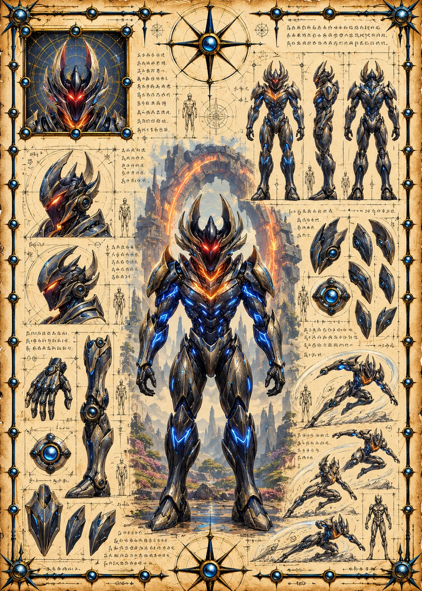

©
©
GENEZYS ARCHIVE · Earth 2 · Synthbot
Troth
Cataclysm Marshal

Archive record
Troth commands the Accord's assaults the way a storm commands the sea. The Tempest Fury mends allied Synthbots and tears through every enemy in one howling front. On Earth 2, the Marshal's pilot is said to be the one who wrote the Accord. The Legionnaires would very much like to know why.
Combat signature
Tempest Fury
80 Cosmara
320 Animus
300 Vitalis
Whips up catastrophic hurricane: Heals all allies for 50 and restores 50 Cosmara to all allies. Deals 70 pierce damage to all.
Genezys 02:08 ™&©2026LEGIONS
